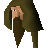

Jungle Forester

| Config name | jungleforester_m |
| NPC id | 401 |
| Combat level | hidden |
| Options | Talk-to |
| Wander range | 3 tiles from spawn |
| Defined in | scripts/_unpack/225/all.npc |
Jungle Forester
He deals in exotic types of wood.
Show all 4 spawns on the world map → Open in knowledge graph →
Locations
| Area | Coordinates | Level | Count | Map |
|---|---|---|---|---|
| Cairn Isle | 2764, 2944 | 0 | 1 | view |
| Cairn Isle | 2798, 2944 | 0 | 1 | view |
| Kharazi Jungle | 2824, 2940 | 0 | 1 | view |
| Kharazi Jungle | 2863, 2941 | 0 | 1 | view |
Dialogue
Jungle ForesterHello friend. You're a long way from civilisation!
PlayerHow do I get into the Kharazi Jungle?
Jungle ForesterWell, I've not managed it yet but I heard that someone managed to find a way in. But they only just managed to escape the jungle with their lives.
Jungle ForesterApparently he was on a mission to map the area. How foolish is that?
Jungle Forester@blu@--The forester looks very interested-- @bla@Oh, well, that sounds quite good actually... Sorry if I sounded rude before, it just didn't seem like a good idea to me.
Jungle ForesterI guess I just wouldn't want to do it myself. But a map of that area would certainly be a big task. And it would certainly be very useful... @blu@-- The forester looks very thoughtful --
Jungle ForesterHey, if you manage to complete it, be sure to let me take a look! Well, best of luck with it, I'm sure you're going to need it.
PlayerDo you have any other tips about the Kharazi Jungle?
Jungle ForesterNot really, but I would say be careful, it's a dangerous place. And good luck.
PlayerHave you seen any natives in the jungle?
Jungle ForesterWell, I've heard some funny sounds and I think I've seen a native... but I'm not sure. They generally don't like to be seen I guess.
Jungle ForesterBut I found an item that you might be interested in. You swing it above your head and it makes a strange sound, it seems to attract their attention.
PlayerCan I have the item please?
Jungle ForesterWell, I wish I could give it to you. However, I have grown fond of it. And it may help me in case I get lost in the jungle.
PlayerOk thanks.
Jungle ForesterYou're welcome! See you around...
PlayerAre you calling me foolish?
Jungle ForesterNo, of course not... Sorry, I have to be on my way...
PlayerWhat do you do here?
Jungle ForesterI'm a forester, and I specialise in exotic woods. I've not managed to penetrate the Kharazi Jungle very far but I have found some interesting tree specimens.
Jungle ForesterIf you do happen to get into the Kharazi Jungle, do come and let me know. I'd love to be able to safely navigate my own way in and out.
PlayerWho are you?
Jungle ForesterI'm a jungle forester. Names mean little in this part of the world.
PlayerSo someone managed to get into the Jungle?
Jungle ForesterYes, he said he was from some place... near the Sorcerer's Tower. Mentioned something about a legend? It meant nothing to me though.
Jungle Forester*Gasp* @blu@-- The jungle forester looks speechless. --
Jungle ForesterThis is very impressive! I'm amazed, it's just great! Do you mind if I make a copy of it, and I'll give you an item in return.
PlayerYes, go ahead make a copy!
Jungle ForesterMany thanks friend.
The Jungle Forester takes out some parchment and some charcoal. studiously renders another copy of your map.
Jungle ForesterMany thanks friend.
Jungle ForesterHere, I won't be needing this any longer, and it may help you. Whenever I've used it before, it attracted the attention of jungle natives.
PlayerWhat will you give me in return?
Jungle ForesterWell, I can offer you this?
Jungle ForesterIf you swing this above your head, it makes a strange sound. I noticed that it attracts the attention of the natives. Is it a deal? Can I make a copy of your map?
PlayerSorry, I must complete my quest.
Jungle ForesterVery well friend, I understand, I must be on my way as well. @blu@-- The Jungle Forester seems a bit annoyed... and wanders off. --
You show the completed map of Kharazi Jungle to the Forester.
Jungle ForesterIt's a great map, thanks for letting me take a copy! It has helped me out a number of times now.
Jungle ForesterSorry, but I have no use for that.
Quests
Referenced in scripts
scripts/quests/quest_legends/scripts/bullroarer.rs2scripts/quests/quest_legends/scripts/jungle_forester.rs2